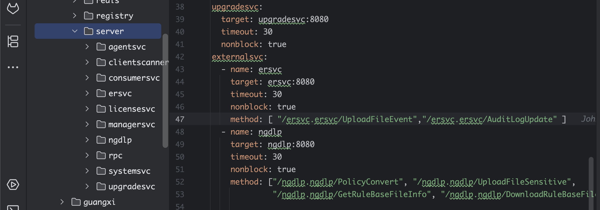
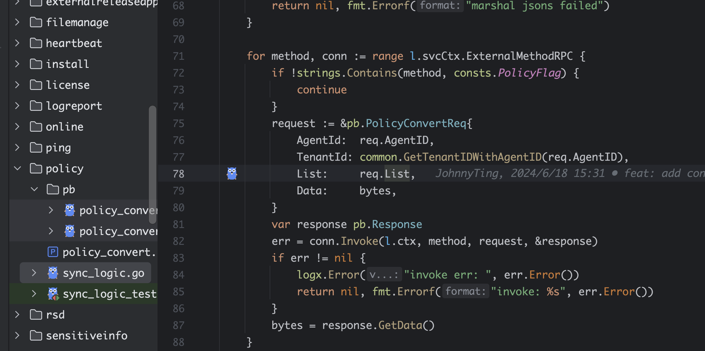

开始跳绳了没有犯懒：
-
小迷直播
今天的话主要做了以下事情:
NGEDR代码合并到developersvc中得对NGEDR的反向引用。然后在获取数据以后在做表格化处理，
目前的知道的方法是deploy种的ngedr配置文件种添加的配置文件，具体在deploy的位置是：f:\gopath\src\aiop\deploy\config\base\server\rpc\client.yaml

ersvc这边对于其的使用方式就是在本地用相同的proto文件生成调用方法

开始跳绳了没有犯懒：
小迷直播